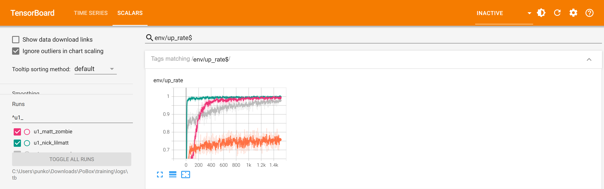
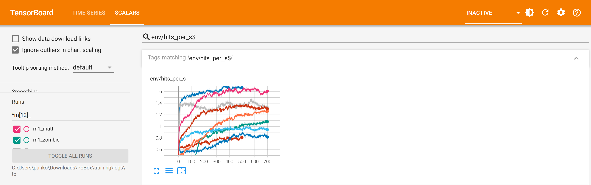
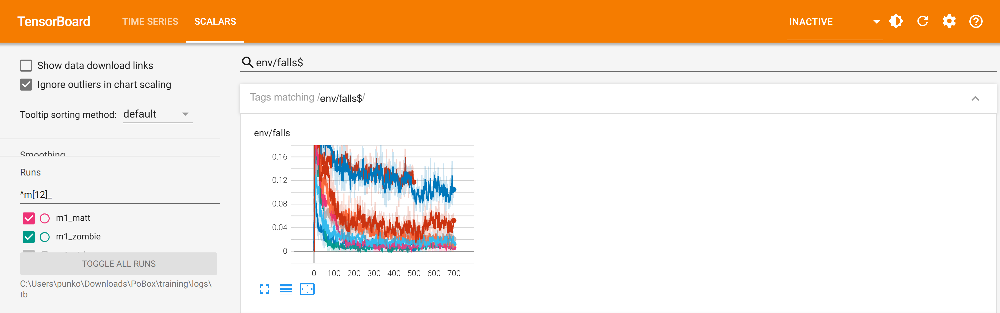

Training report: the night of 2 to 3 October
22:50 to 06:56 · MuJoCo Warp 3.14 on the RTX 5070 Ti · 26 jobs: footwork for six boxers, a match round for all seven, get-up for all seven, handover banks, a second match round for Matt and Trump · every exam in plain C MuJoCo 3.5.0, the version the game runs, without exploration noise
Where every boxer stands
| Boxer | R0 stand | R1 walk | R2 turn | R3 get up | Footing | R4 attack | R5 guard | R6 chin | R7 carrying on |
|---|---|---|---|---|---|---|---|---|---|
| Matt | pass | pass | pass | pass | pass | pass | pass | pass | 23/30 |
| Zombie | pass | pass | pass | pass | pass | pass | pass | pass | pass |
| Nick | pass | pass | pass | pass | 1.33/min | pass | pass | pass | pass |
| Lil Matt | pass | pass | pass | pass | pass | pass | pass | 2.72/min | 23/29 |
| Trump | pass | pass | pass | pass | pass | pass | 15% | 2.50/min | 26/30 |
| Grandma | pass | pass | pass (top-up) | pass | pass | pass | pass | pass | 20/30 |
| Grandpa | pass | pass | pass | pass | 2.00/min | pass | pass | pass | 26/30 |
Zombie passes every rung. Stand, walk, turn and get up pass for all seven. What is left is boxing at close quarters and the moment after a get-up: carrying on (the match policy taking the body back) fails for five, footing for Nick and Grandpa, chin for Lil Matt and Trump, and Trump's guard. Footing and the boxing lines come from the exam of all seven on their newest match policies; getting up and carrying on from the get-up exams. Marks: footing 0.2 unprovoked falls a minute, attack 0.5 a second at 4 m/s times the boxer's speed, guard 30% stopped or under 0.3 head shots a second, chin 1.5 legs a minute, get up 80% in 8 s (60% in 9 s for the grandparents), carrying on 90%.
1. Getting up after a knockdown

env/up_rate: share of knockdown episodes ending standing, with noise, per get-up run (1,500 iterations of the v2 get-up stage, 103 inputs). Matt and Zombie 0.28 to 0.99, Nick and Lil Matt 0.79 to 1.00, Trump and Grandma 0.56 to 0.98, Grandpa (Matt frozen) 0.39 to 0.75. Exam with noise off: 29 to 30 of 30 for every boxer, 1.4 to 2.2 s. Before tonight: Matt 7, Grandpa 18, Zombie 22 of 30.2. Punches landed

env/hits_per_s, the learner's landed punches a second across its six opponents (frozen), with noise. Start to end of each m1 run: Zombie 0.28 to 1.08, Lil Matt 0.45 to 1.26, Grandma 0.65 to 1.31, Matt 0.86 to 1.59, Grandpa 0.60 to 0.95, Trump 0.56 to 0.83, Nick 1.22 to 1.33 (already high). The two m2 runs continue Matt (to 1.66) and Trump (0.80). Attack passes for all seven in the exam.3. Falling over in a bout

env/falls: share of episodes the learner ends on the floor, any cause, with noise. m1: Matt 0.15 to 0.01, Zombie 0.16 to 0.01, Lil Matt 0.18 to 0.01, Grandma 0.23 to 0.04, Grandpa 0.08 to 0.02, Nick 0.10 to 0.02, Trump 0.15 to 0.11; m2 (fall charge 8 for Matt): Matt 0.10 to 0.01, Trump 0.11 to 0.13. The exam counts only falls nobody's punch caused: Matt's went from 1.67 to 0.00 a minute in m2, Trump's from 0.33 to 0.00; Nick (1.33) and Grandpa (2.00) still fail, mostly against each other's new aggression at close range.Compared with before tonight
Much better. At 22:50 one boxer (Matt) had the footwork rungs and the boxing exam on the new bodies passed 1 of 7 (Nick, with the old policies). Now all seven stand, walk, turn and get up; Zombie passes everything, and the boxing exam's lines (R3 to R7 and footing) have gone from 16 fails across the seven to 10 (counting each failed line once). What did not work: paying Trump for blocks made his guard worse (24% to 15%): he trades punches rather than covering, and needs a stage of its own. Carrying on improved little from the second match round (Matt 21 to 23 of 30): the handover bank helps, but 500 iterations at 30% of episodes is not yet enough.
m1_nick, faulted on the GPU (CUDA 719) a minute in and was run again at 04:06; the
restart wrapper now restarts such a run instead of giving up. Five second-round match runs are queued behind a hold
(training/logs/queue.hold).